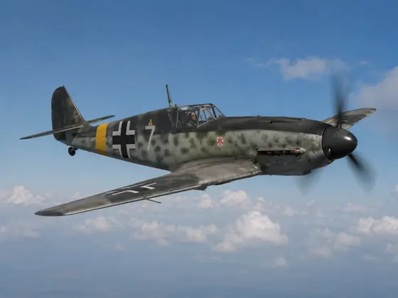

Bf 109 operations · 1937–1945
The Bf 109 was built in huge numbers and fought on every major Luftwaffe front. Its modelling appeal is not just the aircraft itself, but the theatre identity: RLM 71/02 Battle of Britain Emils, tropical Friedrichs in North Africa, Eastern Front whites and yellows, grey-mottled Gustavs over Germany, and late-war K-series machines with simplified, patchy finishes.

Role & strengths
- Luftwaffe single-seat fighter across the entire war
- Battle of Britain, North Africa, Eastern Front and Reich defence routes
- Emil, Friedrich, Gustav and Kurfürst variant differences
- Mottling, theatre bands, yellow ID panels and winter camouflage
- Huge range of ace aircraft, JG markings and Staffel codes
Key theatres
- Channel Front and Battle of Britain
- North Africa and Mediterranean Trop aircraft
- Eastern Front and winter camouflage
- Defence of the Reich and late-war Germany
Specification Bf 109G-6
Survivors today

Surviving Bf 109s are useful for narrow-track landing gear stance, cockpit framing, cowl bulges, spinner, exhaust staining and variant-specific surface detail.
View survivorsTimeline highlights
Build this Bf 109 as…
Pick the theatre first. A Battle of Britain Emil, desert Trop Friedrich, Eastern Front Gustav, Reich defence G-6 and late-war K-4 all need different parts, markings and weathering.
Aircraft identity
Emil, Friedrich, Gustav and Kurfürst parts differ significantly. Check cowling, canopy, wheel bulges, tail, spinner and armament before building.
Bf 109 schemes are highly unit/date specific. RLM colours, mottling, theatre bands and yellow panels must match the chosen aircraft.
Paint scheme cards
Battle of Britain route with early mottling, yellow noses and Staffel markings.
North African Friedrichs need sand fading, filter dust and sun bleaching.
Classic mid-war Gustav route with mottled fuselage and unit-specific bands.
Late G-10/K-4 builds need patchy, photo-led finishes, not generic bright greens.
Campaign cards
JG 2, JG 26 and JG 51 Emil subjects need yellow ID markings, early RLM schemes and restrained weathering.
JG 27 Trop aircraft need dust, sun fade, sand filters and theatre markings.
JG 52 and JG 54 routes allow winter whitewash, yellow ID panels and harsh field wear.
JG 300/JG 1/JG 11 late-war Gustavs and K-4s need Reich bands, mottling and photo-specific finishes.
Build difficulty and related guides
Medium-high. The airframe is compact, but variant details and landing gear stance are easy to get wrong.
Very high. Mottling, theatre bands and late-war RLM variation make this a serious paint subject.
High. Staffel codes, Gruppe bars, ace markings, victory bars and theatre bands must fit the exact aircraft.
Bf 109 Jagdgeschwader and units
Sortable Bf 109 unit cards covering Battle of Britain, North Africa, Eastern Front, Reich defence and late-war routes.
Bf 109 operating map
Airfield info
Click a marker to show linked Bf 109 unit cards and modelling notes.
Campaign timeline
Survivors
Books and reference sources
Bf 109 build guide
Bf 109 videos, photos and archive material
Media replaces the old separate walkaround tab: cockpit, exhaust, undercarriage, markings, survivor references, archive imagery and video cards are grouped here.